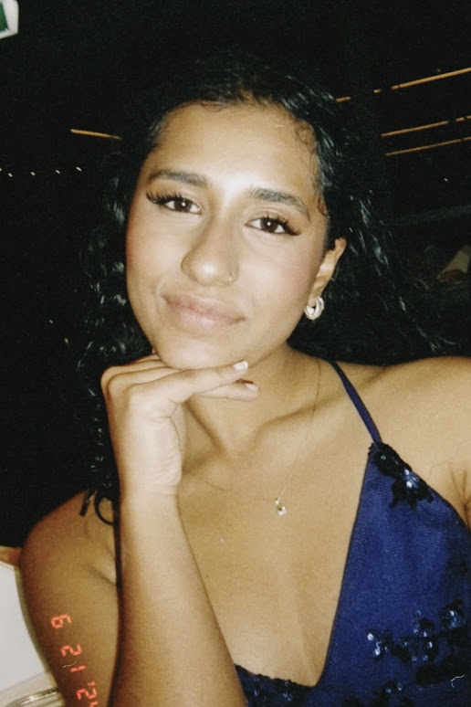
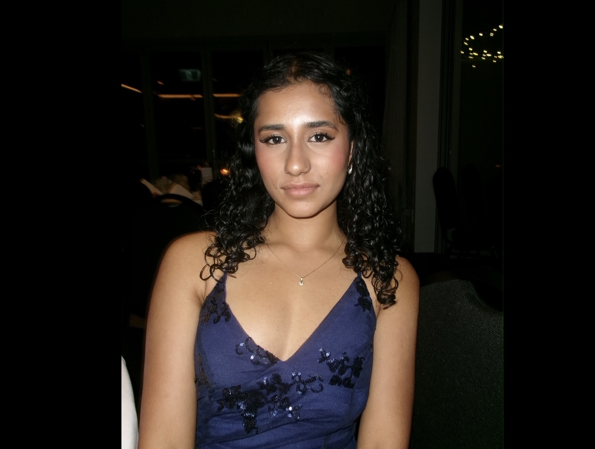

This is the ultimate tutorial of making your photos shine!
Lighting can completely change your photo depending on how you use it. To control your lighting, it all depends on the setting of your shoot and your light source placement. Using lighting 'properly', can create shadows for drama or highlight subject matter.
For example, this is an image with bad lighting:

As you can see, the model appears unflattering. Their prominent features are hidden from the shadows, and it makes them appear flat and one-dimensional. The lighting placement completely goes against our intention of creating a flattering portrait. This further proves how important lighting is.
This is an example of a photo with good lighting:

This photo has the light source to the side. The shadows in the image fall against the model, highlighting features and body shape. After editing, the shadows adds more contrast and drama to the photo. The effects of lighting stems to emotions, colours and the level of flattery in the photo.
Lighting Positions:
Front: No shadows can be present, and details are more clear. This is the easiest placement you can do. It can look kind of boring or flat sometimes though.
Side: This can add drama to your photos. It gives your subject matter shadows and depth. This can be easy to achieve, but shadow placements will have to be accounted for as well. It is adaptable to the extent that you can shoot from any angle where you want the shadows to fall from the side. It all depends on what you're trying to achieve when taking your photos.
Back: Backlighting can be the trickiest to achieve particularly at a beginner level. Without proper equipment or editing skills, you can result in an unintentional silhouette. This light angle can still create beautiful shots. It can add a 'halo effect' or make a photo seem like it's glowing and give nice tonal contrasts.